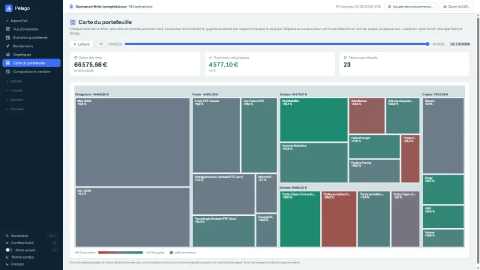
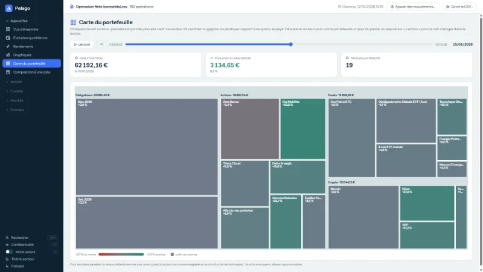
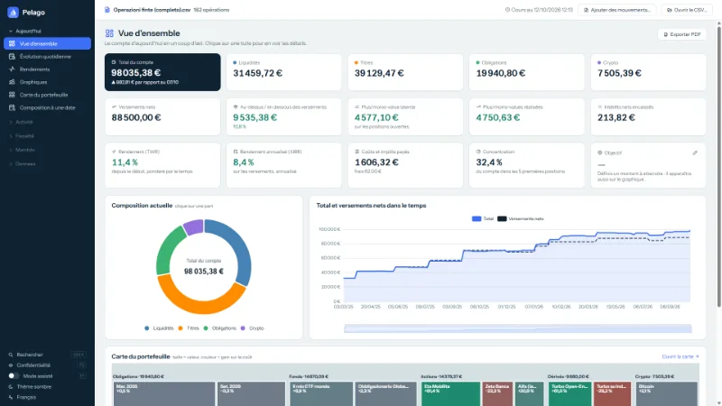
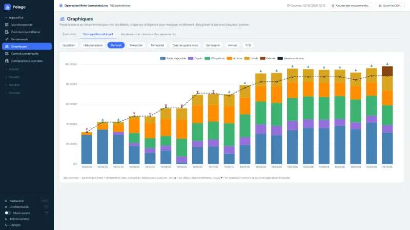
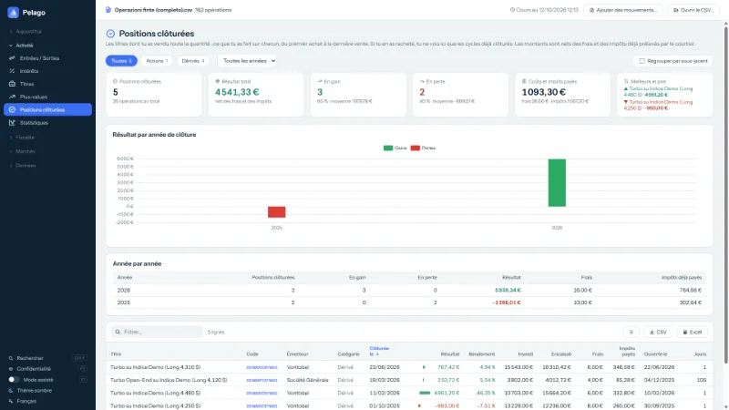
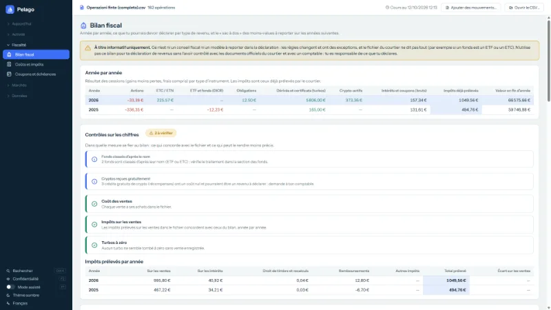
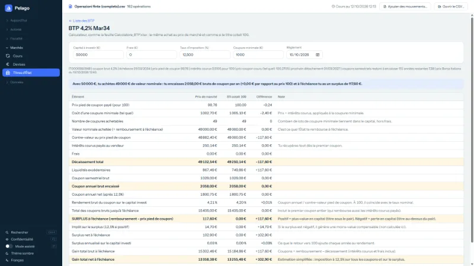
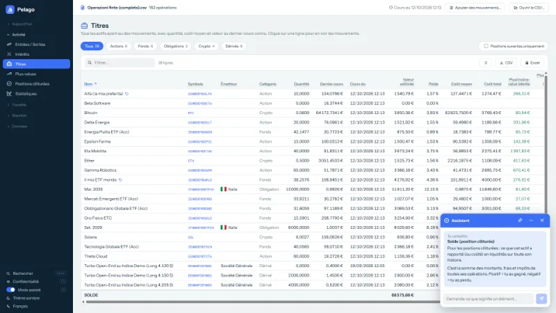
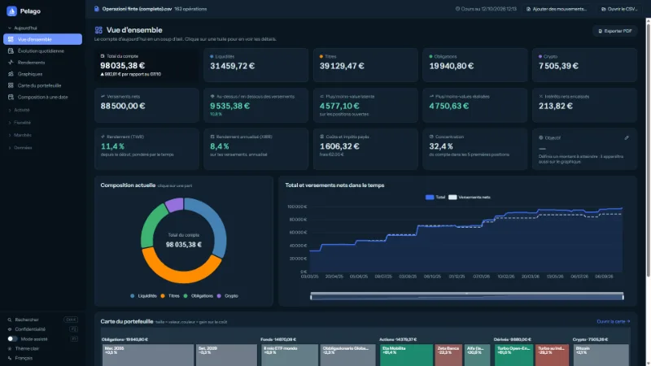

Comment ton portefeuille a-t-il évolué dans le temps ?
Le fichier CSV de Trade Republic ne le dit pas. Pelago, oui : une carte de tuiles colorées de ton portefeuille, avec un curseur pour revenir à n'importe quel jour du passé.
Gratuite, sans publicité, logiciel libre. Tout reste sur ton PC.
Ce qu'elle fait
Un seul fichier CSV, plusieurs façons de le lire. Les captures montrent un compte d'exemple aux données inventées.
-

Carte du portefeuille
Une tuile par titre : plus elle est grande, plus elle vaut ; la couleur indique si tu gagnes ou perds par rapport au coût.
-

Curseur du temps
Choisis un jour du passé, ou appuie sur « Lecture » et regarde les titres apparaître, grandir et disparaître.
-

Vue d'ensemble
Total, catégories, versements, rendements et coûts du compte, en un coup d'œil.
-

Graphiques
Ce qu'il y avait dans le compte, mois par mois, et si tu étais au-dessus ou en dessous de tes versements.
-

Positions clôturées
Combien tu as gagné ou perdu sur chaque titre vendu, net des frais et des impôts déjà prélevés.
-

Bilan fiscal
Un récapitulatif informatif, année par année. Ce sont des estimations : elles ne remplacent ni les documents du courtier ni un comptable.
-

BTP et titres d'État
Pour l'Italie, la liste des BTP à taux fixe : choisis-en un et calcule combien tu peux en acheter, les coupons et le surplus à l'échéance.
-

Mode assisté
Passe la souris sur une colonne ou un nombre : Pelago explique ce que c'est et comment c'est calculé.
-

Cinq langues, thème clair et sombre
Italien, anglais, français, allemand et espagnol. Ton CSV n'est jamais modifié ; la sauvegarde locale est à un clic.


Comment l'utiliser
Télécharge le CSV
Depuis ton compte Trade Republic, exporte le fichier CSV des transactions.
Télécharge Pelago
Prends
pelago.exedans la dernière version et lance-le : c'est un seul fichier, sans installation.Ouvre le CSV
Appuie sur « Ouvrir le CSV… » et choisis le fichier. Ton CSV n'est jamais modifié.
Télécharger la dernière version
Il faut Windows 10 ou 11 en 64 bits et le WebView2 Runtime, déjà présent dans Windows 11 et dans la plupart des Windows 10 à jour.
Tu veux l'essayer sans tes données ?
Lance Pelago sans ouvrir de fichier et appuie sur « Essayer avec un compte d'exemple » : une deuxième fenêtre s'ouvre avec un compte inventé (environ 160 opérations), dans un dossier temporaire qui disparaît à la fermeture. Si tu préfères, télécharge le CSV d'exemple et ouvre-le avec « Ouvrir le CSV… ».
Ce qui sort de ton PC
- Ton CSV et tes données restent sur le PC. Pelago ne demande jamais d'identifiant ni de mot de passe et ne se connecte pas à ton compte.
- Pour les prix, elle interroge des services publics (Yahoo Finance, CoinGecko, BCE, Borsa Italiana et quelques autres) et n'envoie que des codes de titres et des dates : jamais de montants, de quantités ni de données personnelles.
- Les prix des produits dérivés (Vontobel et Société Générale) sont désactivés par défaut : c'est toi qui les actives, depuis la page Cours.
- Le code est public : tu peux vérifier toi-même qu'il n'y a rien d'autre.
Vérifie-la toi-même
- Le code est public (GPL-3.0) : tu peux le lire, le compiler toi-même et voir ce qu'il fait.
-
Chaque version indique l'empreinte SHA-256 de
pelago.exe. Après le téléchargement, dans PowerShell :Get-FileHash .\pelago.exe -Algorithm SHA256Compare le résultat avec le fichier
pelago.exe.sha256de la même version. - L'exécutable n'est pas signé numériquement : la première fois, Windows peut afficher l'avertissement SmartScreen (« Windows a protégé votre ordinateur »). Nous ne le cachons pas : si tu préfères, compile Pelago à partir des sources.
Questions fréquentes
Pelago est-elle officielle, ou liée à Trade Republic ?
Non. C'est un projet personnel et non officiel : elle n'est ni affiliée à Trade Republic ni approuvée par elle, et n'a aucun accès à ton compte.
Combien ça coûte ?
Rien. Elle est gratuite, sans publicité et sans but lucratif : logiciel libre (GPL-3.0).
Les chiffres sont-ils précis ?
Ce sont des estimations calculées à partir du fichier : ce n'est pas un solde officiel. Les prix viennent de services publics et peuvent être en retard ou manquer.
Puis-je l'utiliser pour ma déclaration de revenus ?
Pas comme seule source. Les bilans fiscaux sont des estimations informatives, avec des formules simplifiées : contrôle-les avec les documents officiels de ton courtier et avec un comptable. Tu es responsable de ce que tu déclares.
Fonctionne-t-elle avec d'autres courtiers, ou sur Mac et Linux ?
Elle est conçue pour le CSV de Trade Republic : aucune garantie avec les fichiers d'autres courtiers. Pour l'instant, elle ne fonctionne que sous Windows 10/11 64 bits.
Comment la désinstaller ?
Supprime pelago.exe : elle n'écrit pas dans le registre et ne démarre pas avec l'ordinateur. Pour effacer aussi les données, supprime le dossier %LOCALAPPDATA%\Pelago et, si tu les as activées, les sauvegardes dans Documents\Pelago backup.
J'ai trouvé une erreur ou j'ai une idée : comment la signaler ?
Ouvre un ticket sur GitHub ou écris à pelago_claude@gmail.com. Ne joins jamais ton vrai CSV : il contient toutes tes opérations.
Avertissements et responsabilité
Pelago calcule des valeurs, des rendements et des bilans fiscaux à partir du fichier CSV que tu lui fournis, avec des formules simplifiées : ce sont des estimations, qui peuvent contenir des erreurs ou ne pas tenir compte de tous les cas (formats différents, opérations sur titres, régime fiscal, impôts étrangers). Ce n'est ni un solde officiel, ni un conseil financier, juridique ou fiscal, et cela ne remplace ni les documents officiels de ton courtier ni un professionnel : vérifie toujours les chiffres avant de les utiliser, en particulier pour ta déclaration de revenus. Pelago est fourni « tel quel », sans garantie d'aucune sorte (GPL-3.0, art. 15-16) : dans les limites permises par la loi, l'auteur n'est pas responsable des dommages découlant de l'utilisation du programme ou de ses résultats.